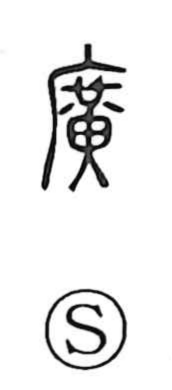

広

Uncategorized
Kun: hiroi, hiromaru, hiromeru, hirogaru, hirogeru | On: kou
wide ・ broad ・ spacious ・ to spread ・ to widen ・ to broaden
Explanation
Originally written 廣, this is a phono-semantic character. The element 黃 (kō) provides the on-reading and, in Shirakawa’s view, depicts a jade pendant hung from a belt—an orderly array of jades that itself suggests breadth and is linked with the idea of 横, “width.” From this image the character came to denote a spacious structure—a large house or hall—and, more generally, anything wide or large, as well as the actions of spreading and widening. The modern simplified form is 広.